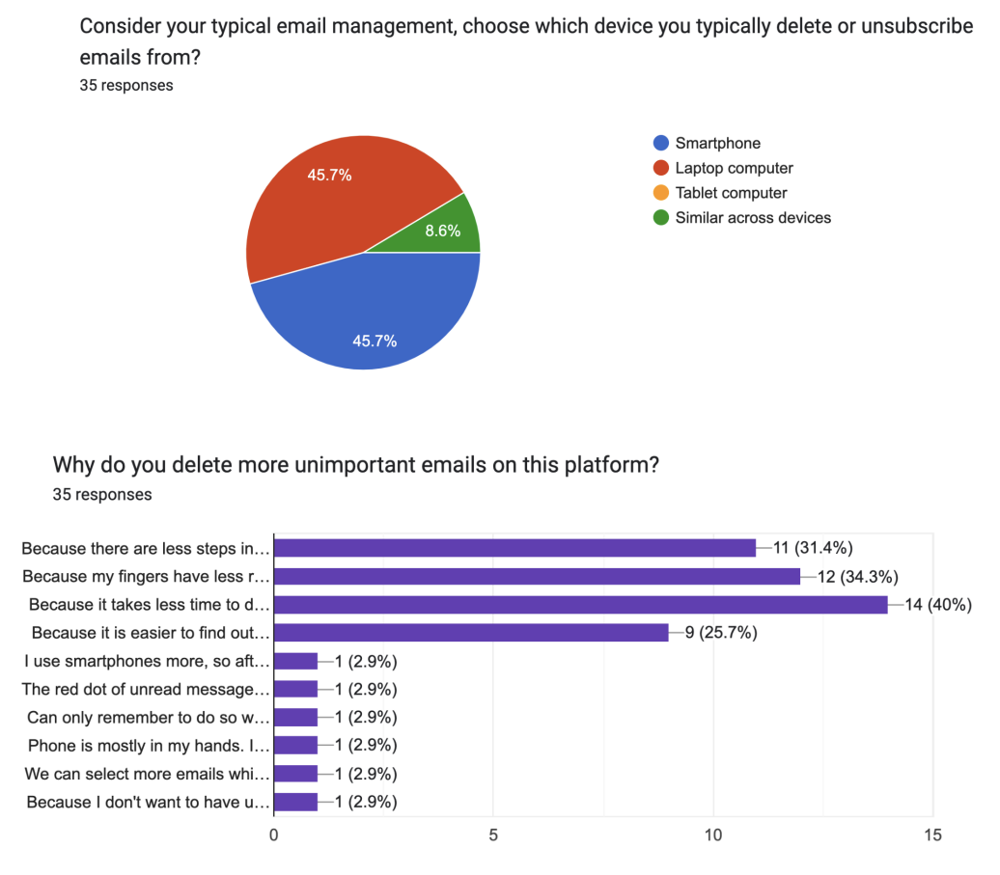
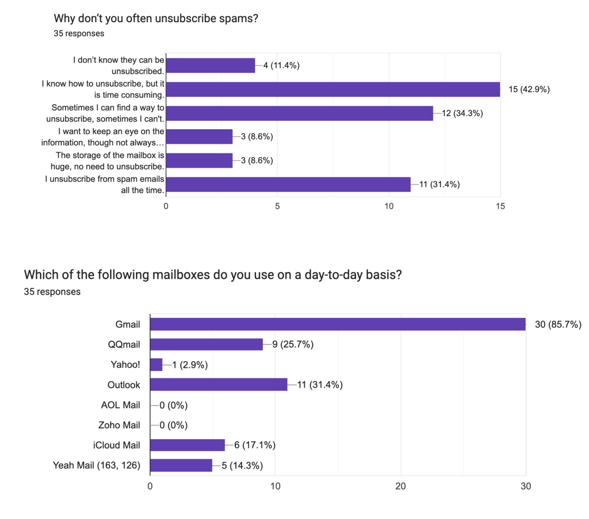
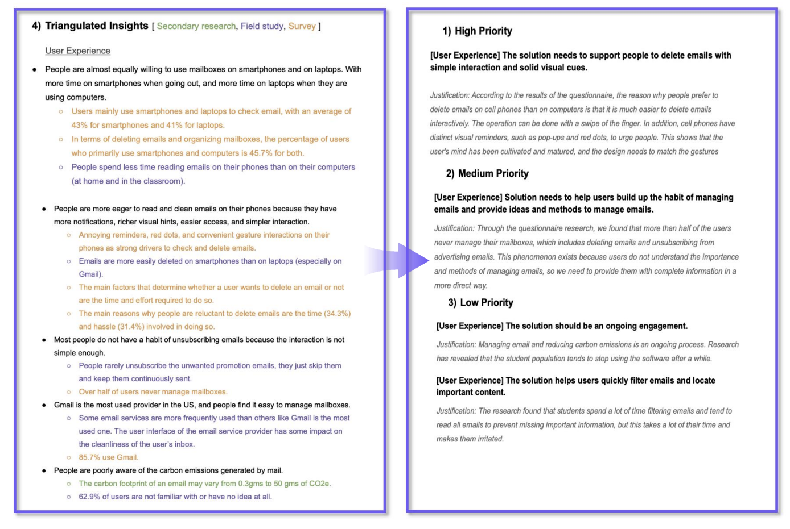

EcoMail
Our Design Question
How can we make it easy for students and faculties in Universities to manage their email so that its digital carbon footprint can be reduced
Our problem space
Everyday about 333 billion emails are sent everyday and this contributes to about 81.3 billion grams of CO2 emissions. Research shows that about 84.8% of emails are spam and/or not important. These emails can be easily avoided by users which inturn will decrease the carbon footprint of emails.
Key stake holders
The key stakeholders are teachers and students in universities. We focus on students because they are born in the age of the internet and use emails to receive information a lot. Also, their email boxes are always full of unnecessary emails . We focus on university teachers because they not only receive but also send a lot of emails everyday. Between students and teachers, so much communication is done through email, which is highly related to the topic. Moreover, they are the people who are easily contacted.
Secondary Research
We set out to study the state of email use among Americans, especially among the school and work population. We wanted to understand the overall picture of email sending, how much carbon emissions are generated overall, how much carbon is emitted by an individual, what are the main sources, and what people's habits are in operating email. In addition, we want to find current solutions and gaps in this problem.
Survey (Quantitative Research)
Survey (Quantitative Research)

Our questionnaire consists of 3 main parts. The first part confirms whether the insights obtained in the field research hold true in the larger population, and explores the motivation behind them. The second part asks questions that cannot be observed through field research but may have an impact on the design solution. The third part checks whether the user is aware of the impact of an email on the environment.

Insights and analysis
- Users mainly use smartphones and laptops to check email, with an average of 43% for smartphones and 41% for laptops.
- In terms of deleting emails and organizing mailboxes, the percentage of users who primarily use smartphones and computers is 45.7% for both. 8.6% used both devices to manage their mailboxes with similar frequency. No one uses a tablet to organize mailboxes.
- The main factors that determine whether a user wants to delete an email or not are the time and effort required to do so. Interestingly, six users filled in other options, saying annoying reminders, red dots, and convenient gesture interactions on their phones as stronger drivers.
- 22.9% of users always delete emails. 42.9% of users delete emails sometimes, and 25.7% of users rarely or never delete emails.
- The main reasons why people are reluctant to delete emails are the time (34.3%) and hassle (31.4%) involved in doing so.
Requirements
Ideation
After gathering the requirements we brainstormed for tasks which either the user or the application would have to accomplish. These tasks were then converted to different features which were integrated into the prototype we were going to build.
Story boarding
Some scenarios we thought of where the users would use the features we will develop for a positive impact.
Sketches of prototypes
We thought of multiple features we wanted to integrate in the application. We made sketches on paper to better understand the ideas we had in our minds and we built upon them. Some of the features we thought of were clubbed together to solve multiple requirements at once.

Prototypes
This prototype features 3 features. Emails are separated based on their color so that the user can easily identify the more important ones. There is a carbon meter at the bottom left which shows us the amount of carbon emitted due to the emails in the user's inbox. This can change based on the user's email habits. Technologies Used:- Django, Bootstrap.
This prototype features a stacking function. This is very similar to any messaging application. This feature keeps the user's inbox clean and this will also encourage the user to unsubscribe from any particular sender if he has not opened emails from any particular user for a long time.
This prototype features a card view where a user can see a brief of the email before they open it. The user can drag a card(email) to the delete icon to delete it. Technologies Used:- Figma.
Usability Testing
We asked four users to use our application and review it. Being involved deeply in the carbon footprint of an email we were more aware of the impact of an email. We wanted users to review our prototypes to get feedback on what features they liked or they wanted to see in their email service providers .The usability testing videos are accessigble by clicking here.
We got a lot of valuable feedback from the users and we decided to use it in our next iteration. We realized that we could develop this as a chrome extension so that users don't have to use another platform to use these features.
Reflection
Coming from a technology background. I worked on multiple work items during my professional experience, I never thought about the amount of effort, research, and the different techniques which are used to gather requirements. This course was intellectually stimulating as I was able to understand the thought and process which goes behind designing a solution for a problem that is very broad. As an engineer, it was hard for me to stop thinking of a solution during the research phase but I overcame this and was solely able to focus on describing a problem we face in our lives. Some of the requirements we gathered from qualitative research were truly amazing because as daily users we don't realize what we need until we observe ourselves. During the brainstorming sessions with my teammates, I was able to understand the perspective of people who belong to different backgrounds trying to solve the same question. This made me realize the differences we had in a good way as we used them as a strength and built upon each other's ideas. These were some of the most useful techniques which I plan to use in any project I will be part of in the future.